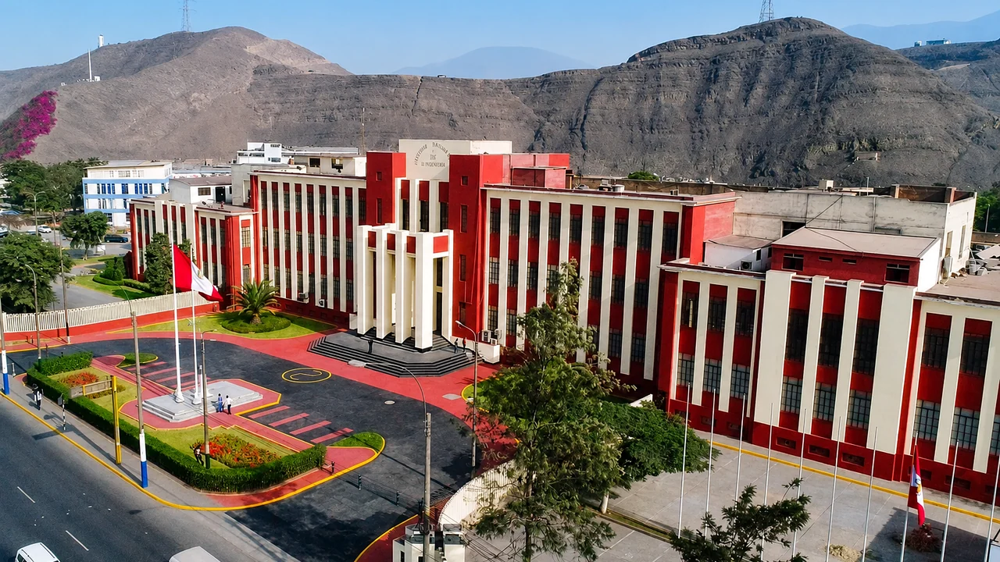
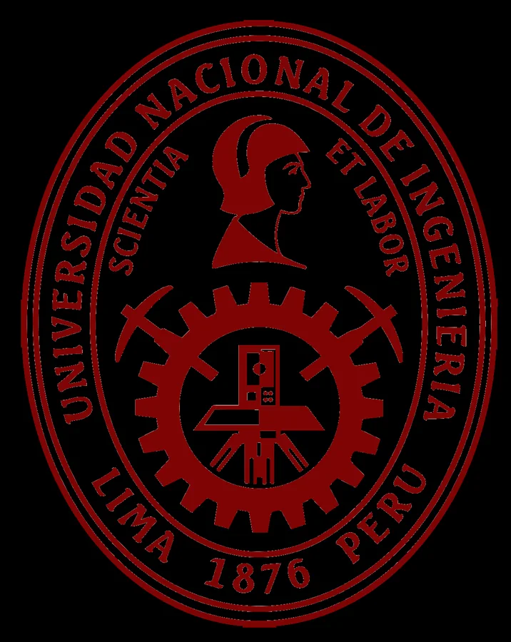
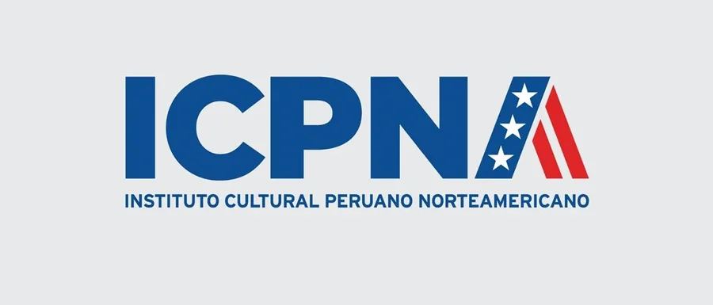
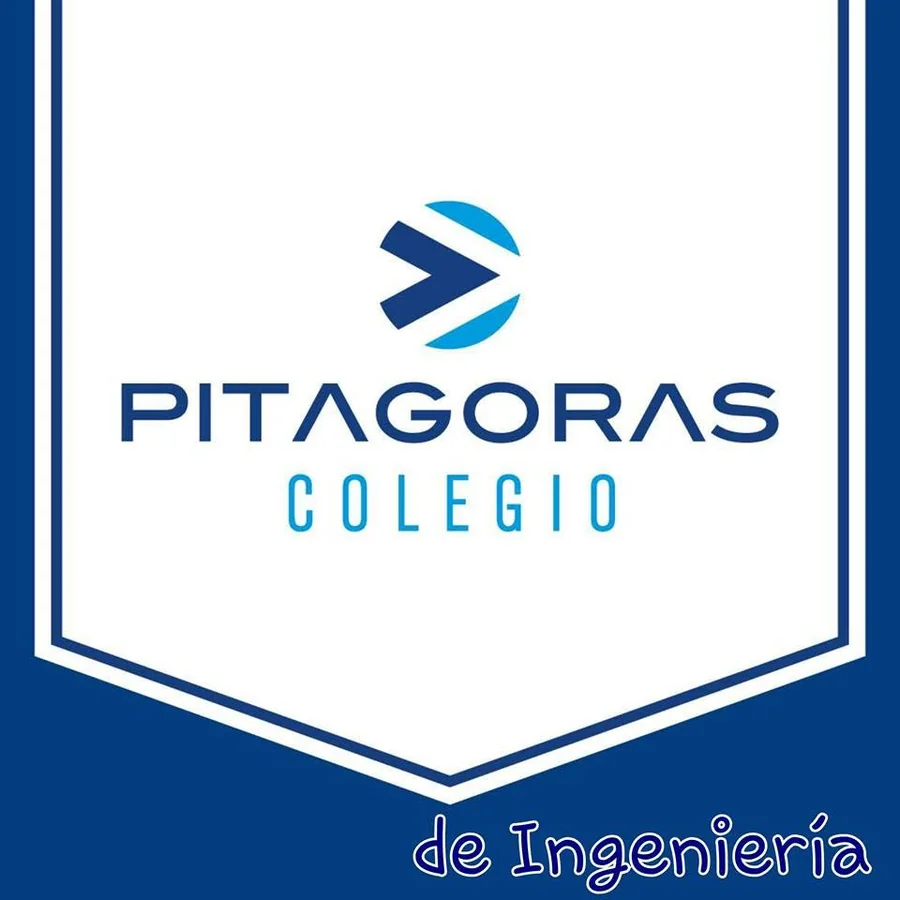
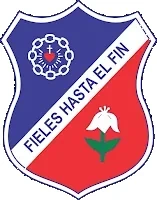

Marzo 2022 – Actualidad
Universidad Nacional de Ingeniería
Ingeniería Civil
Formación universitaria orientada al análisis, diseño, construcción y gestión de proyectos de infraestructura.
Formación
Formación académica en Ingeniería Civil, complementada con el aprendizaje continuo del inglés y la participación en actividades extracurriculares.
Formación universitaria
Mi formación principal se desarrolla en la Universidad Nacional de Ingeniería, donde curso el noveno ciclo y pertenezco al quinto superior.


Marzo 2022 – Actualidad
Ingeniería Civil
Formación universitaria orientada al análisis, diseño, construcción y gestión de proyectos de infraestructura.
Formación complementaria

Instituto Cultural Peruano Norteamericano · Formación continua en el idioma inglés.

Lima, Perú · Culminación de la educación secundaria.

Chota, Cajamarca, Perú · Formación secundaria cursada hasta cuarto año.